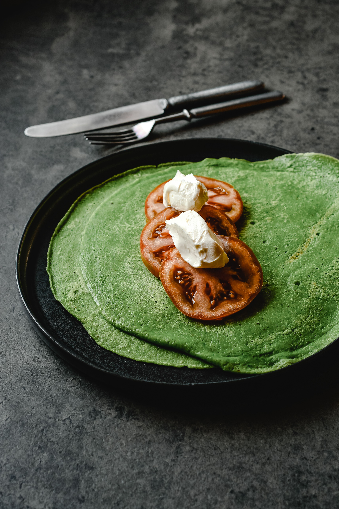

Svårt recept på pannkakor
Recept respektfullt lånat från Ica.se
Ingredienser
För 4 Portioner
Pannkakssmet
- 1 dl vetemjöl
- 2 dl mjölk
- 1 dl vispgrädde
- 1 krm salt
- 2 ägg
- 1 tsk vaniljsocker
- smör till stekning
Apelsinsås
- 3 apelsiner
- 1 dl strösocker
- 3 msk smör
- 2 msk apelsinlikör
Instruktioner
- Pannkakssmet: Vispa ihop mjölet med mjölken, tillsätt övriga ingredienser och vispa ihop till en slät smet. Låt gärna vila i kylen 30 minuter.
- Stek 8 tunna pannkakor (för 4 port), ca 26 cm i diameter, i smör. Vik ihop och lägg på ett fat.
- Riv skalet från 1 apelsin (ca 1 msk, för 4 port).
- Skala alla apelsiner med kniv. Skär ut hinnfria klyftor med en liten kniv över en skål så att juice och klyftor hamnar i skålen. Pressa resten av juicen från hinnorna i skålen.
- Smält sockret i en torr stekpanna på medelvärme till en gyllene karamell
- Tillsätt smöret och apelsinjuicen i stekpannan och låt snabbt koka ihop till en kolasås. Häll över likören och koka i ca 30 sekunder eller flambera (häll över likören och tänd på med en tändsticka eller tändare och låt lågan brinna ut). Lägg ner de vikta pannkakorna, apelsinskalet och filéerna i såsen.
Serveringsförslag
